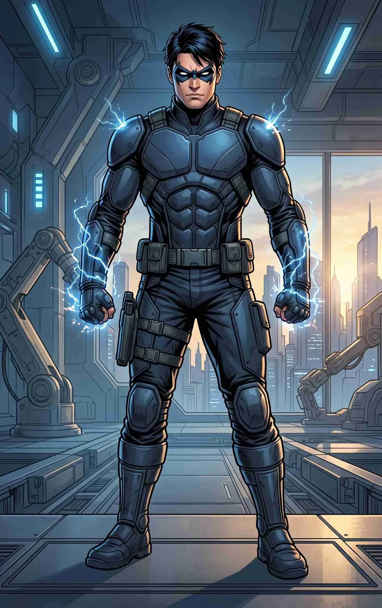
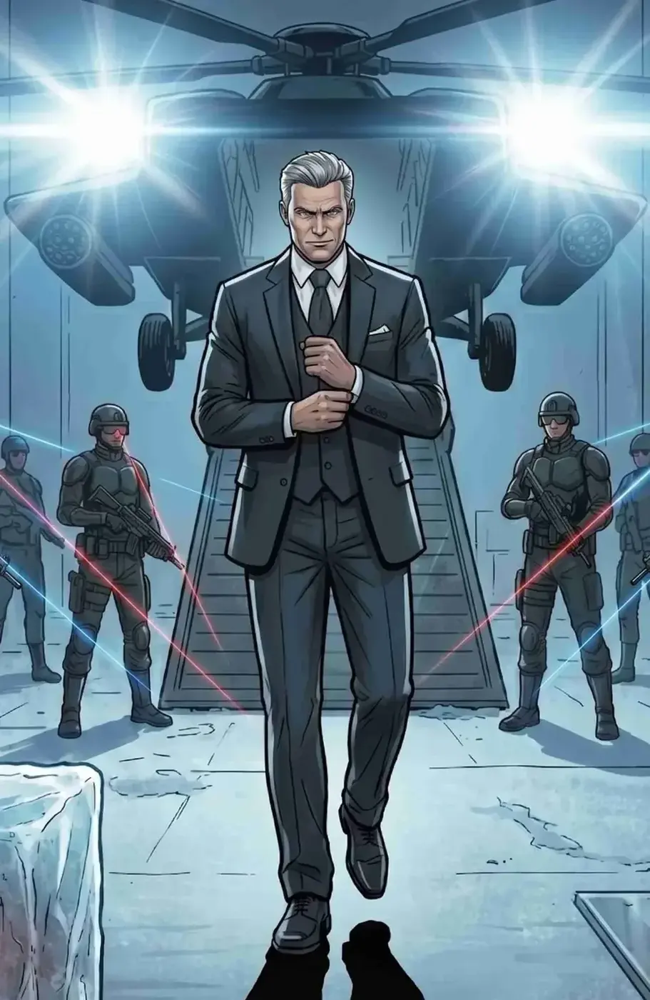
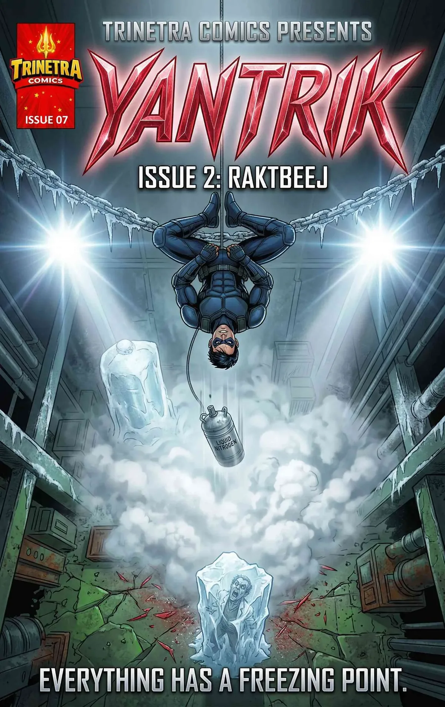
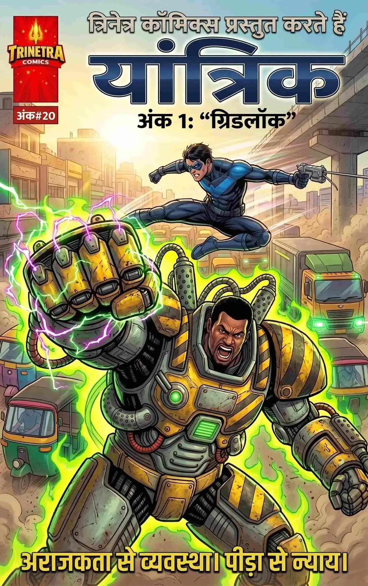
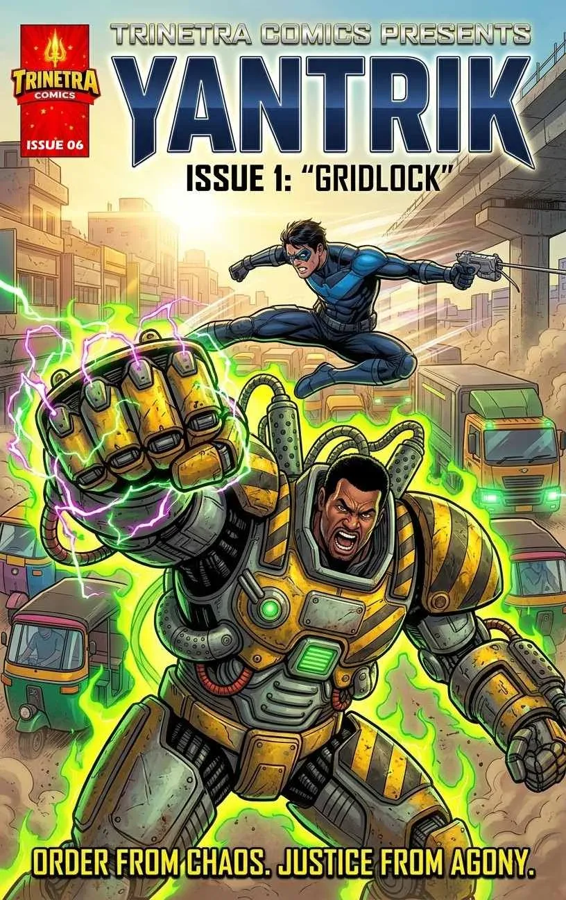

None
Yantrik possesses no meta-human abilities, mutations or magic. He operates strictly on his “Mind Over Matter” philosophy, weaponizing thermodynamics, kinetic energy and gravity against his enemies.

THE MIND OVER MATTER HERO
PHYSICS. PRECISION. WILLPOWER.
Siddhant Singhania is the heir to the ruthless Singhania Corp empire. Disgusted by his father’s willingness to sacrifice innocent lives for profit, he secretly engineered a high-tech tactical suit to fight back. Armed only with genius intellect, elite agility and grappling technology, he protects the streets of Kanpur as Yantrik—a hero who proves that human willpower and physics can overcome any monstrous threat.
Yantrik possesses no meta-human abilities, mutations or magic. He operates strictly on his “Mind Over Matter” philosophy, weaponizing thermodynamics, kinetic energy and gravity against his enemies.
Master of applied physics, mechanical engineering and tactical computer science.
Elite gymnast and traceur who uses extreme agility and spatial awareness to turn the urban environment into his playground.
Highly trained in close-quarters martial arts, though he prefers evasion and momentum-based strikes over brute-force brawling.
Processes environmental variables such as trajectories, tensile strengths and structural weaknesses in fractions of a second during high-stress combat.
Custom-machined metallic gauntlets housing high-torque tension spools and carbon-fiber grappling wires for swinging and binding enemies.
A sleek metallic domino mask with glowing white lenses that projects real-time environmental diagnostics, chemical scans and encrypted digital hacking interfaces.
Carries localized smoke/explosive charges, logic-shunt hacking drives and micro sticky-cameras.
The V1 suit is a high-tensile, hyper-flexible matte navy-blue and slate-grey tactical system designed for maximum kinetic freedom rather than heavy armor.
He is unarmored and completely mortal. A direct hit from heavy machinery or high-caliber weapons is lethal.
His V1 suit lacks heavy ballistics plating and electrical insulation, leaving him vulnerable to environmental hazards and severe physical trauma.
His comatose mother, Maya Singhania, is his greatest emotional vulnerability. Threats to her safety can cause him to abandon logic and make reckless tactical errors.
Highly empathetic, fiercely driven and deeply analytical, Siddhant actively rejects the sociopathic arrogance of his billionaire father. He suppresses fear, grief and physical pain by breaking down crises into solvable mathematical and physical equations.
Standing at 6'0", Siddhant has a lean, highly athletic gymnast build—muscular but designed for speed, not bulk. He has sharp, intelligent eyes, dark hair and frequently sports hidden bruises, cuts and medical tape beneath his clothes from his nightly patrols.
THE MAN BEHIND THE MASK
In the Singhania boardroom, Siddhant wears sharp, expensive bespoke tailored suits. On the streets, he prefers sleek leather jackets, dark jeans and boots. Beneath the privileged exterior is a young man who has secretly turned his family’s stolen power into a weapon against injustice.
Siddhant is fighting a two-front war: physically protecting the citizens of Kanpur from high-tech and biological threats, while intellectually waging an espionage war against his own father.

THE FATHER / THE CORPORATE EMPIRE
Vikramaditya is the ruthless CEO of Singhania Corp and Siddhant’s father. His corporate empire and sociopathic pursuit of power form the central human conflict of Yantrik’s story.
Siddhant suspects that his mother Maya’s mysterious illness was not an accident. The deeper he investigates Singhania Corp, the more he discovers that the empire’s darkest secrets are connected to the threats he fights on the streets.
SHORT BIO
Siddhant Singhania is the heir to the ruthless Singhania Corp empire. Disgusted by his father’s willingness to sacrifice innocent lives for profit, Siddhant secretly engineered a high-tech tactical suit to fight back. Armed only with his genius intellect, elite agility and grappling tech, he protects the streets of Kanpur as Yantrik.
DETAILED BIO
Born into the gilded cage of Singhania Corp, Siddhant grew up witnessing the cold, calculating sociopathy of his father, CEO Vikramaditya Singhania. The breaking point occurred when a mysterious illness left his beloved mother, Maya, in a permanent coma—a tragedy Siddhant suspects his father orchestrated.
Realizing that the legal system could not touch a man who owned the city’s infrastructure, Siddhant siphoned millions through untraceable ghost accounts to fund Project Yantrik. Operating from a hidden vault in the underground medical wing where his mother sleeps, Siddhant designed a suit built for speed, kinetic leverage and digital warfare.
As Yantrik, he battles high-tech cyber-terrorists like Gridlock and biologically mutated horrors like Raktbeej. His war is both physical and intellectual: protecting Kanpur while uncovering the dark, bloody secrets buried at the heart of Singhania Corp.
Maximum 3 latest issues

A gripping sci-fi horror superhero thriller where Yantrik must track down a terrifying mutated scientist who uses his own radioactive blood as a weapon, after the villain abducts Siddhant’s comatose mother from an impenetrable corporate fortress.

एक हाई-वोल्टेज साई-फाई एक्शन थ्रिलर, जहाँ एक अरबपति वारिस भौतिक विज्ञान, एलीट पार्कौर और एक प्रोटोटाइप सामरिक सूट का उपयोग करके एक साइबर-आतंकवादी को रोकता है, जिसने शहर के ऑटोमेटेड ट्रांजिट ग्रिड को विनाश के हथियार में बदल दिया है।

A high-octane sci-fi action thriller where a billionaire heir uses elite parkour, physics, and a prototype tactical suit to stop a grieving cyber-terrorist from turning an automated city transit grid into a weapon of mass destruction.
TRINETRA COMICS UNIVERSE
Yantrik proves that the right mind can turn physics itself into a weapon.